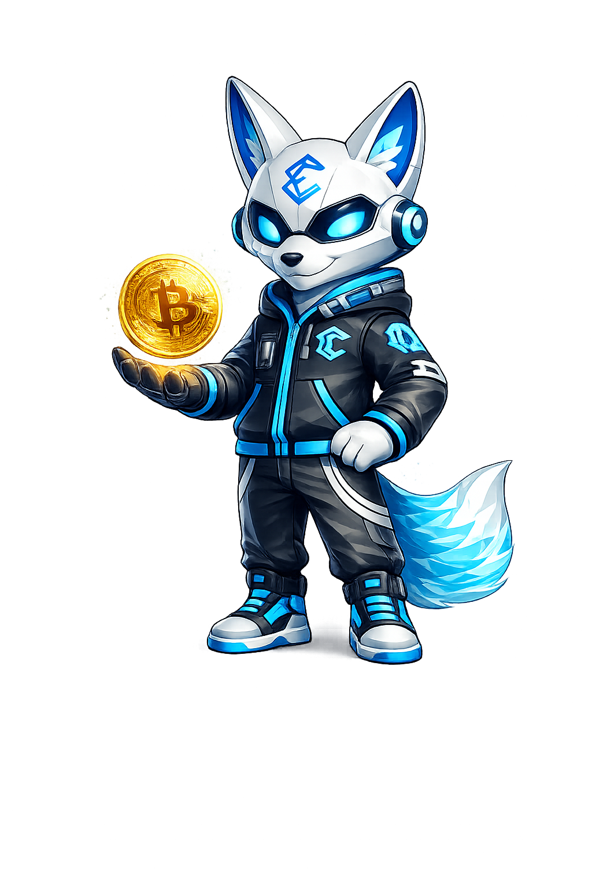

Desde qué es un satoshi hasta cómo operar BTC en los mejores exchanges del mundo. Zenix te guía paso a paso en el activo más importante de la historia financiera.

Cada video incluye recursos y links de plataformas recomendadas por Zenix.
Bitcoin es la primera criptomoneda descentralizada del mundo, creada en 2009 por la misteriosa figura conocida como Satoshi Nakamoto. En este video aprenderás qué es exactamente, cómo funciona la blockchain, qué son los satoshis y por qué Bitcoin cambió para siempre la forma en que entendemos el dinero.
Comprar y vender Bitcoin puede parecer complicado al principio, pero con las herramientas correctas es más sencillo de lo que imaginas. En este tutorial aprenderás cómo funciona el mercado spot, los pares de trading, cómo colocar órdenes de compra y venta, y qué es el spread entre precios.
No todos los exchanges son iguales. En este video Zenix compara las principales plataformas para comprar y vender Bitcoin: Binance, Bybit, KuCoin y Kraken. Analizamos comisiones, seguridad, liquidez y facilidad de uso para que elijas la mejor opción según tu perfil de inversor.
¿Llegará Bitcoin a $1 millón? ¿Qué impacto tendrá el próximo halving de 2028? ¿Puede BTC reemplazar al sistema financiero tradicional? Analizamos las proyecciones más serias del mercado, el ciclo de los 4 años y por qué cada vez más instituciones acumulan Bitcoin como reserva de valor.
Únete a la comunidad Eprocash y aprende con Zenix cómo dar tus primeros pasos de forma segura.

Puedes empezar con tan solo $10 USD. Bitcoin se divide en unidades llamadas satoshis (1 BTC = 100,000,000 satoshis), por lo que no necesitas comprar un Bitcoin completo.
La red Bitcoin nunca ha sido hackeada en más de 15 años. La seguridad depende de cómo guardas tus activos. Usa exchanges de confianza y considera una wallet de hardware para grandes cantidades.
Para principiantes recomiendo Binance por su interfaz simple, alta liquidez y soporte en español. Usa el link de afiliado de Eprocash Academy para obtener descuento en comisiones desde el primer día.
El halving ocurre cada 4 años aproximadamente y reduce a la mitad la recompensa de los mineros. Históricamente, cada halving ha precedido un gran bull market. El próximo es en 2028.
Como cualquier inversión, Bitcoin conlleva riesgo. Nunca inviertas más de lo que estés dispuesto a perder. La clave es la educación y la gestión del riesgo — exactamente para eso existe Eprocash Academy.
Cada vez más instituciones, gobiernos y empresas adoptan Bitcoin como reserva de valor. El supply está limitado a 21 millones, lo que genera escasez. Muchos analistas lo comparan con el oro digital del siglo XXI.